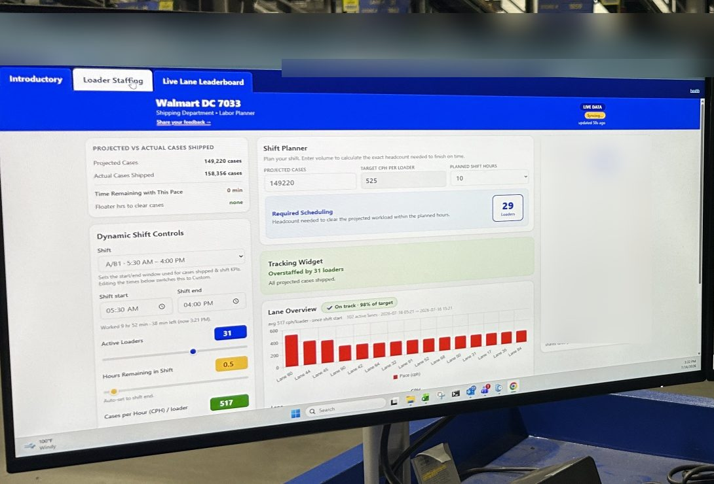

Process Engineer Intern, Apple Valley, CA, Jun to Aug 2026
Outbound shipping at the distribution center was losing labor hours, and start-of-shift staffing decisions relied on a projection feed that was often wrong. Managers also spent hours each shift checking status across separate systems.
